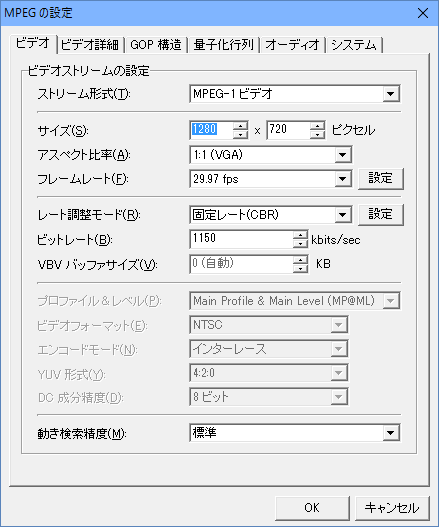
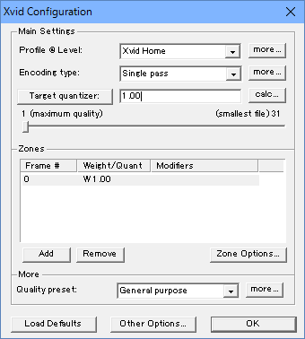

コンバート編
- TMPGEnc を利用して、コンバートをする流れとなります。
- まず、最初に出る画面は、キャンセルしてください。

- さて、変換元のムービーはなんでもよいのですが、
今回は信長の野望・創造のオープニングファイルを例にします。
(同じようなゲームを所持していない場合は、何か手持ちの「.avi」ファイルや、「.mpeg」ファイルで代用してください。)
- OP_WIN__jpn_L.N14が、創造のオープニングムービーのファイルです。
拡張子がN14などとなっていますが、中身はムービーで2005～2010年ごろによく利用されていた「wmvフォーマット」です。
TMPGEnc へとドラッグ＆ドロップします。
- TMPGEncの下部にある「設定」のボタンを押して、下図のような画面を出します。

- このままでは、ムービーの解像度が大きいので、それぞれ元の大きさの半分の640x360にしましょう。
- さて、準備は整いました。
今度は、「出力ファイルのcodec」の選択へと移行しましょう。
上部メニューより、「ファイル」⇒「ファイルに出力」⇒「AVIファイル」と進めます。
- まずは、映像のcodecを選びましょう。
下部にある「映像を出力」の右法にある「設定」を押します。
- Xdiv MPEG-4 Codec を選択し、「設定」を押しましょう。
- 下図のような設定にしましょう。
ファイルサイズが大きいことが気になる人は、1.00を5.00にぐらいにすると、ファイルサイズがかなり小さくなります。

- 「OK」、「OK」と押して、映像のcodecの設定を終えます。
- 次に、音声のcodecを選びましょう。
下部にある「音声を出力」の右法にある「設定」を押します。
そして、MPEG Layer-3、48000(元のPCMと同じ周波数)、192kbps CBR, Stereo を選択します。
- さて、映像codecとしてXVID、音声codecとしてmp3へと設定が完了しました。
「保存」ボタンを押しましょう。
- 高品質な変換となりますので、結構時間がかかります。
座して待ちましょう。
- 以上で天翔記で使用可能な.aviファイルが出来上がりました。